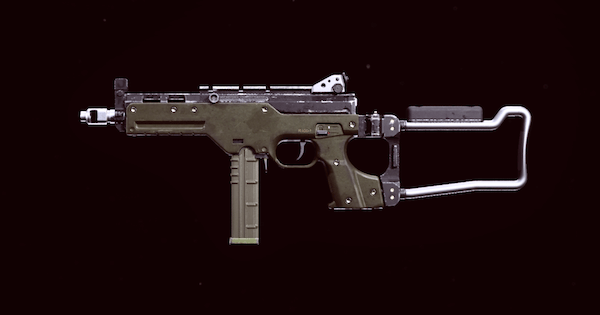

Es el subfusil que mas rapido mata a rango cercano, lo que lo hace bueno para luchar dentro de casas o edificios, contiene 50 balas y un buen nivel mobilidad, su principal desventaja es la perdida de daño a medianas y largas distancias, como tambien su retroceso complicado de manejar. Pero aqui tenemos la mejor clase
Cañon: Reforzado pesado de 24.1 cm
Municion: Tambor STANAG de 50 balas
Culata: Culata Raider
Acople: Operador de campo
Boca de cañon: Silenciador Agency

La LC 10, es el nuevo subfusil "meta" del juego, un arma muy balanceada en cuanto a daño, dispersion de valas, cadencia y precision, un excelente subfusil cuando es acompañado por:
Cargador: STANAG de 55 balas
Acople: Empuñadura rapida SFOD
Cañon: Fuerza operativoa de 35.3 cm
Culata: Culata raider
Boca de cañon: Silenciador Agency